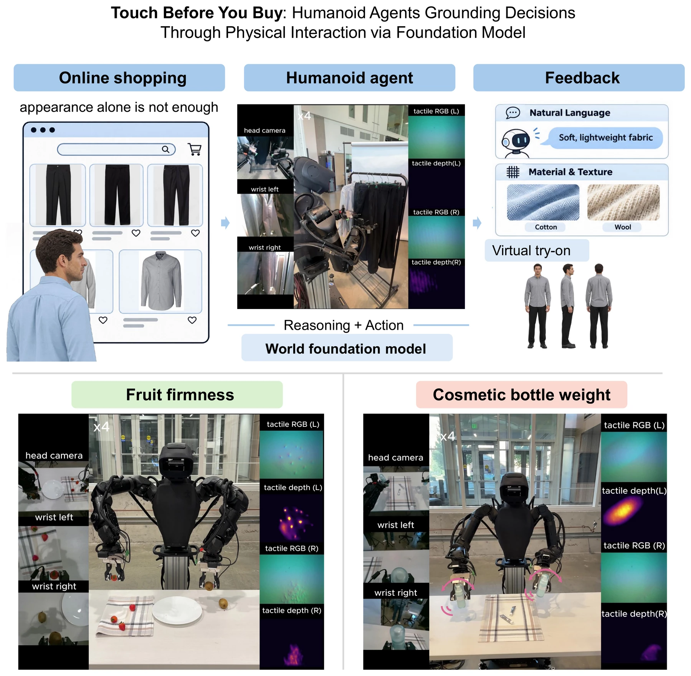

Click the figure to open the full-resolution PDF.
Humanoid agents offer a promising approach to extending human perception and interaction into remote and open-world environments. While existing research has largely focused on vision-based perception and decision-making, understanding the physical properties of objects through direct interaction remains relatively underexplored. In this work, we propose a tactile-enabled humanoid agent framework that physically interacts with objects and provides users with information beyond visual appearance. Our system employs a wheeled semi-humanoid robot equipped with dual arms and GelSight-based tactile sensors integrated into parallel-jaw grippers. Leveraging the COSMOS world foundation model, the agent performs reasoning and interaction planning to guide active physical exploration. Through tactile interaction, the agent can assess physical properties such as surface texture, material characteristics, and thickness. We explore online clothing shopping as a representative application, where users can remotely request tactile inspections of garments located in warehouses or on retail shelves. The system provides three types of feedback: (1) natural-language descriptions of tactile observations and physical properties, (2) material and thickness information supported by illustrative images, and (3) virtual try-on results and multi-view images to visualize selected garments from different perspectives. Together, these capabilities explore how tactile-grounded humanoid agents, guided by world foundation models, can bridge the gap between digital information and physical experience.
Real-world demonstrations of the tactile-enabled humanoid agent.
@article{zhou2026touch,
title={Touch Before You Buy: Humanoid Agents Grounding Decisions Through Physical Interaction via Foundation Model},
author={Zhou, Pokuang and Wang, Yicong and Zhang, Zhiyuan and She, Yu},
year={2026}
}